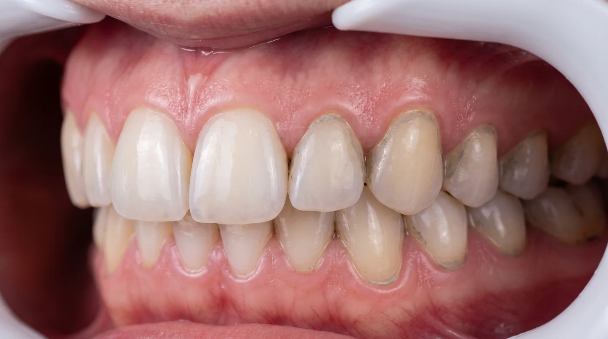

Материал для специалистов
Приведённые значения твёрдости — ориентировочные и служат для сопоставления порядка величин, а не для расчётов. Характеристики конкретного продукта запрашивайте у его производителя.
Пять факторов вместо одного
Абразивное действие в воздушно-абразивной обработке складывается из пяти независимых величин:
- Твёрдость материала частицы относительно твёрдости обрабатываемой ткани.
- Форма зерна — округлая или кристаллическая с гранями.
- Размер частицы и, что не менее важно, разброс размеров в партии.
- Кинетическая энергия потока — давление воздуха и скорость частиц.
- Время экспозиции и угол — то, что задаёт гигиенист.
Из этих пяти в спецификации обычно указана одна — размер. Поэтому сравнение «14 мкм против 40 мкм» описывает лишь часть картины.
Твёрдость: что с чем сравнивать
Ключевой принцип прост: частица воздействует на ткань тем сильнее, чем больше разница в твёрдости в её пользу. Если частица мягче ткани — она разрушается сама и снимает только наслоение.
| Материал | Твёрдость по Моосу (ориентировочно) | Комментарий |
|---|---|---|
| Эмаль | ≈ 5 | Самая твёрдая ткань организма |
| Дентин | ≈ 2–3 | Существенно мягче эмали |
| Цемент корня | ≈ 2–3 | Обнажается при рецессии, уязвим |
| Титан (абатмент) | ≈ 4–6 в зависимости от сплава | Полировка повреждается легче, чем сам металл |
| Композит | варьируется | Матрица мягче наполнителя |
| Бикарбонат натрия (сода) | ≈ 2,5 | Кристаллическая, угловатая частица |
| Эритритол | мягче соды | Округлое зерно |
| Глицин | мягче соды | Округлое зерно |
Из таблицы следует практический вывод, который часто теряется: риск определяется не эмалью, а дентином и цементом. Абразив, безопасный для интактной эмали, может быть избыточным для оголённой шейки, поверхности корня в кармане или края композитной реставрации.
Форма зерна
Две частицы одинакового размера и близкой твёрдости работают по-разному, если различаются формой.

Угловатый кристалл контактирует с поверхностью гранью или ребром. Площадь контакта мала, локальное давление велико — частица скалывает наслоение. Это эффективно по плотному пигменту и травматично по мягким тканям.
Округлое зерно контактирует по касательной, распределяя энергию по большей площади. Такая частица скорее сдвигает и полирует, чем скалывает. Отсюда и допустимость поддесневой работы, и меньший дискомфорт пациента.
Форма — единственный параметр, который невозможно «настроить» на аппарате. Давление, дистанцию и время гигиенист меняет по ходу процедуры; геометрия зерна задана на производстве и определяет потолок безопасности материала.
Разброс фракции
Заявленные «14 мкм» — номинальное значение. Реальная партия всегда представляет собой распределение. Вопрос в том, насколько оно узкое.
Что даёт широкий разброс:
- Локальные пики воздействия. Единичные крупные частицы в мелкой фракции ведут себя как крупный абразив.
- Нестабильная подача. Неоднородный порошок хуже течёт, даёт рывки и повышает риск засора канала наконечника.
- Непредсказуемость результата от партии к партии — а значит, невозможность выстроить воспроизводимый протокол.
Именно поэтому контроль распределения частиц на производстве важнее красивой цифры в каталоге. Тема подачи и ухода за оборудованием разобрана отдельно: каким порошком заправлять наконечник.
Про индекс RDA
Иногда абразивность порошков пытаются описывать индексом RDA. Здесь нужна аккуратность: RDA — метод, разработанный для зубных паст и измеряющий истирание дентина щёткой в стандартизованных условиях. Механика воздушно-абразивной обработки принципиально иная: частица не трётся, а ударяется под углом с заданной скоростью.
Поэтому корректно сравнивать порошки не по перенесённому из другой методики индексу, а по совокупности: основа, твёрдость, форма зерна, номинал и разброс фракции.
Что спрашивать у поставщика
- Основа состава — эритритол, глицин, бикарбонат натрия, иное.
- Номинальная фракция и разброс — не только среднее значение.
- Форма частицы — округлая или кристаллическая.
- Допустимость поддесневого применения и работы вокруг имплантов — прямым вопросом.
- Гигроскопичность и условия хранения — от этого зависит поведение вскрытого флакона.
- Стабильность от партии к партии и наличие входного контроля.
Практический вывод
Один порошок не закрывает весь приём без компромисса: либо он избыточен для чувствительных зон, либо неоправданно медленный по плотному налёту. Рабочее решение — две-три фракции и выбор под зону, а не под пациента целиком.
Коротко
- Абразивность — это твёрдость, форма, размер, разброс и параметры потока, а не одна цифра.
- Ограничивающий фактор — дентин и цемент, а не эмаль.
- Форма зерна задаётся на производстве и определяет потолок безопасности материала.
- Разброс фракции влияет на стабильность результата не меньше номинала.
- RDA описывает пасты и щётку, а не струю с абразивом.
Материал носит информационный характер. Значения твёрдости приведены как ориентиры для сопоставления порядка величин. Имеются противопоказания, необходима консультация специалиста.